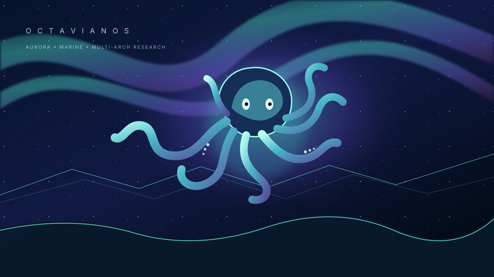
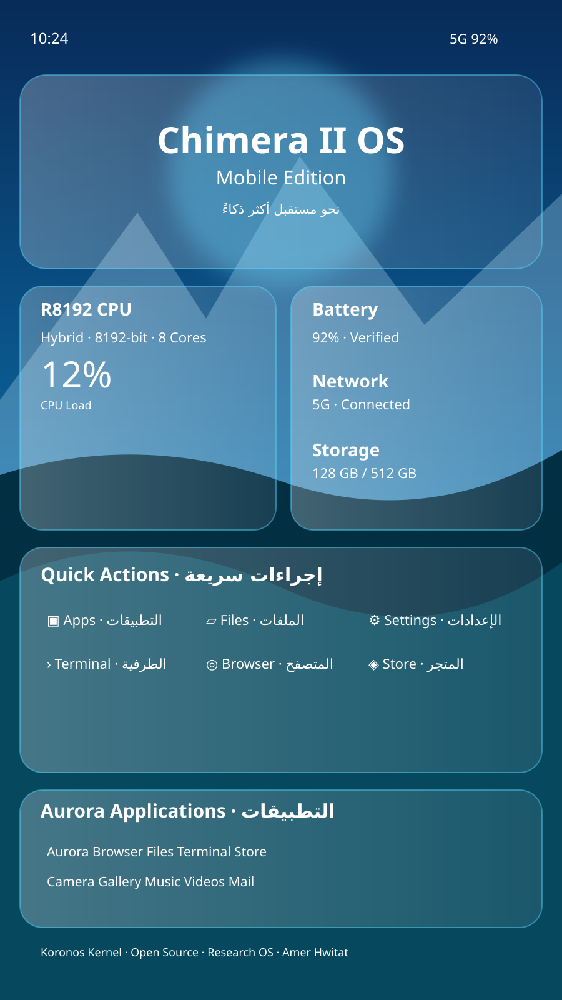

OctavianOS · Aurora
Aurora Wayland Glass Desktop
Deep-ocean science-fiction artwork, aurora ribbons, translucent surfaces, and the Aurora desktop preview.
Explore Aurora’s glass-and-aurora visual language, Marine’s ocean-glass workspace, mobile previews, and the shared application catalog. This page links to the checked-in web showcases; a browser preview is not proof of a native OS session.

Deep-ocean science-fiction artwork, aurora ribbons, translucent surfaces, and the Aurora desktop preview.

Ocean-glass horizon, turquoise ribbons, layered waves, and a Windows-inspired workspace preview.

Explore the existing Aurora glass desktop preview and its checked-in wallpaper collection.

Existing SVG artwork and browser assets remain linked to their checked-in source paths for reuse and offline packaging.

Offline-embedded mobile artwork paired with the existing browser preview; this is not a claim of native mobile runtime acceptance.

Embedded boot-stage visual reference. Firmware/GRUB integration must still be verified in the ISO builder and actual boot trace.
Open the existing application center and curated desktop catalog.
Browse the existing web edition, documentation, and app hub without implying every listed application is native-executable.
Open publication & release status dashboard for PRs, workflow links, and production acceptance gates.
Web artwork and showcase links are available independently. Native desktop builds, production userspace readiness, all six Live/Installer/Recovery × BIOS/UEFI cases, installer cold-reboot persistence, recovery repair, and measured SMP remain separate release gates. Do not interpret this gallery as production acceptance.
Artwork source and consumer manifest · Source repositories: ChimeraIIOS · OctavianOS · website source.